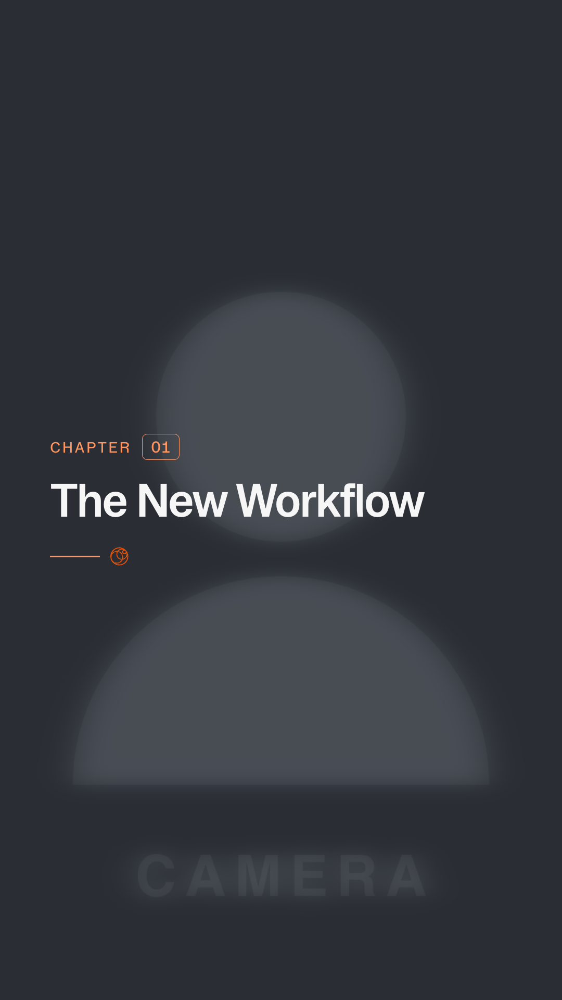
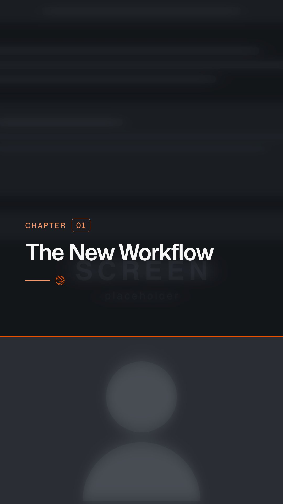

Booton headlines, compact chapter numbers, generous spacing and a quiet orange signature. Shared typography and motion keep standalone cards and footage openers consistent.
Interchapter card numbers now subtract one: source chapter 02 displays 01. Source IDs and titles stay intact.
Style reference: SAAGA Brand Guidelines · page 2. Renderer snapshots use placeholder footage.

